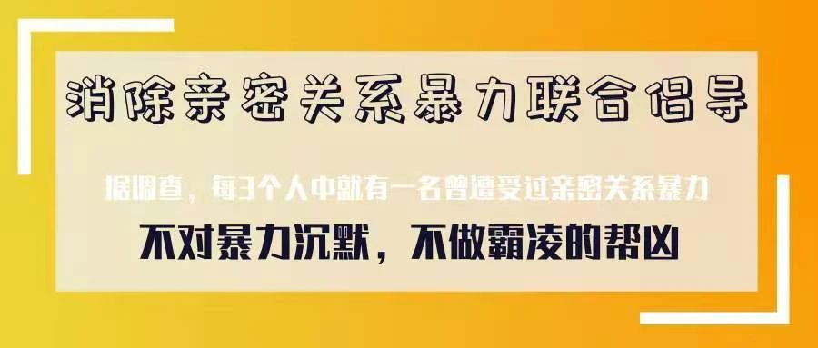
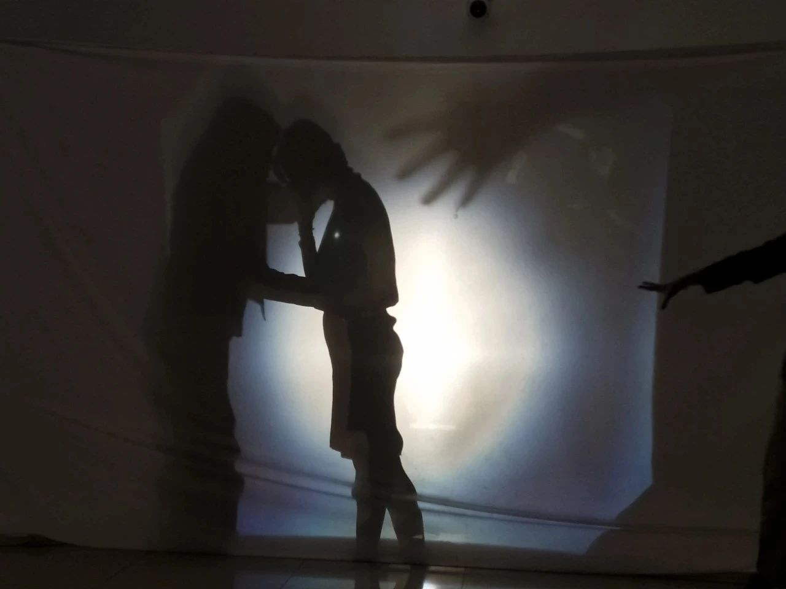
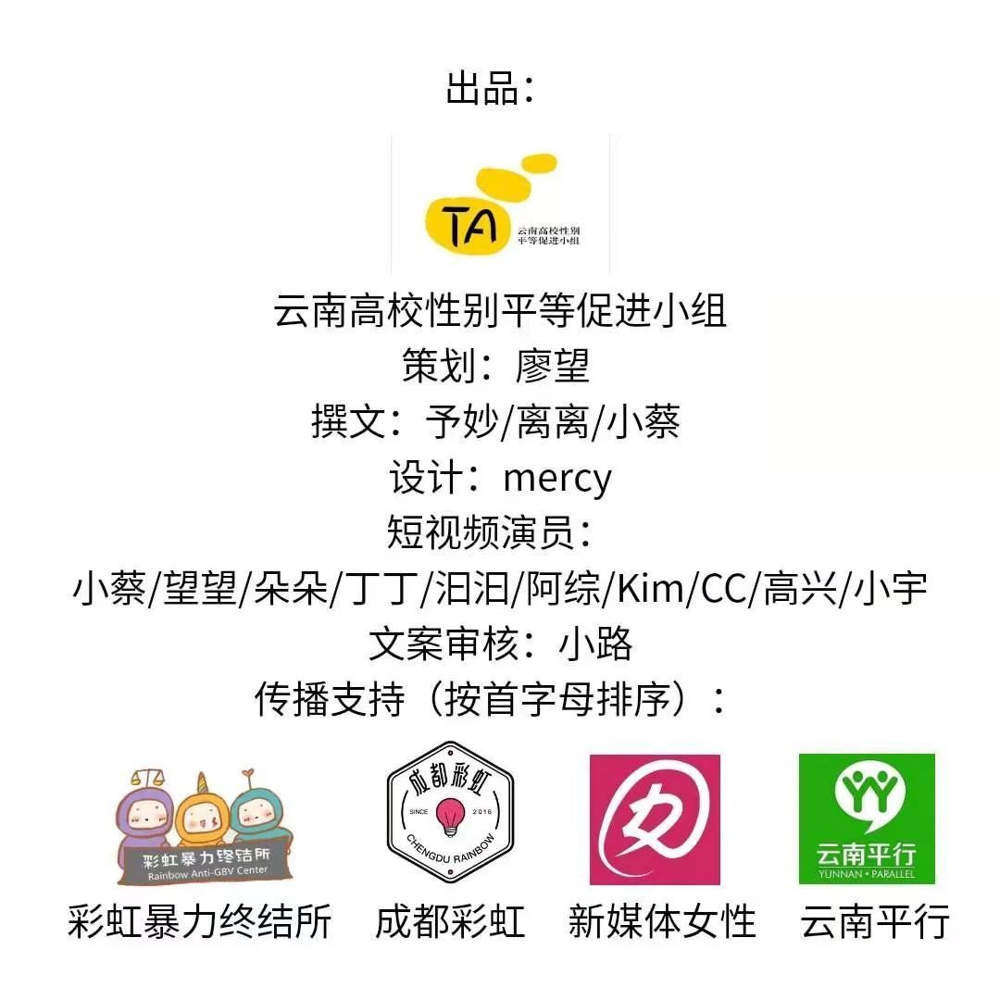
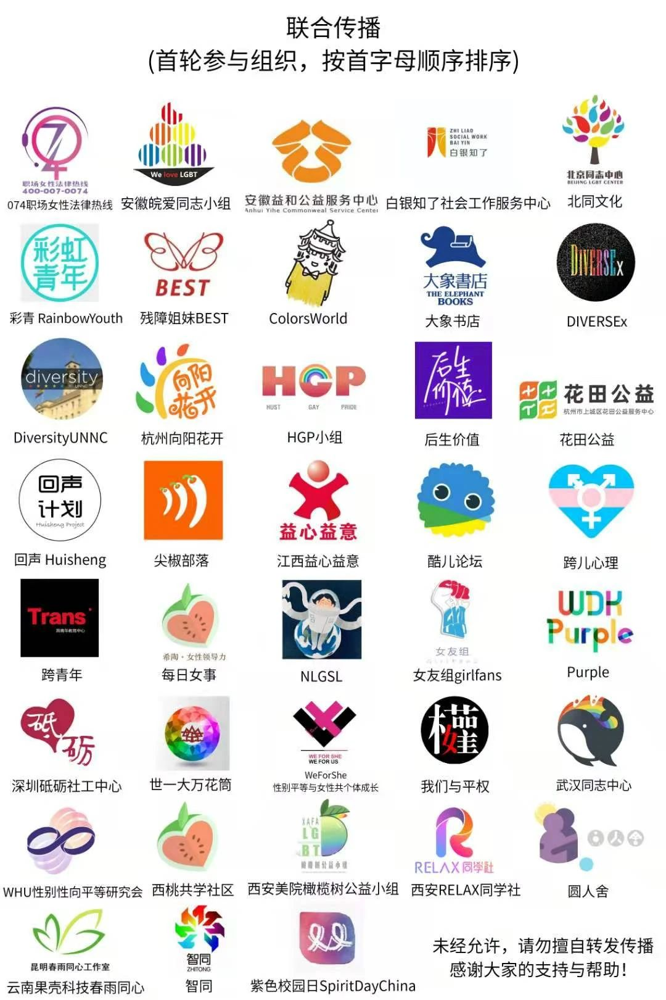
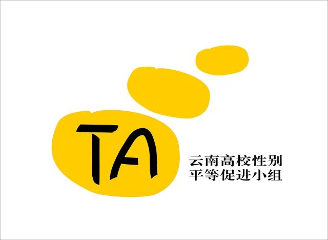

消除亲密关系暴力联合倡导
编者荐语：
每年的11月25日到12月10日，是联合国倡议的消除性别暴力16日。在此，我们倡导：不对暴力沉默，不做霸凌的帮凶。
以下文章来源于云南高校性别平等促进小组 ，作者云高组
小组成立于2015年7月，通过理论学习和行动，提升性别平等意识和运用性别平等分析工具的能力，同时用具体行动宣传、倡导性别平等价值观。


据调查，每3个人中，就有一名曾遭受过亲密关系暴力。亲密关系暴力，离我们并不遥远。
根据世界卫生组织的定义，除了家庭、婚姻外，同居、约会、追求、分手等不同亲密关系进程中存在的任何形式的暴力问题，都被界定为亲密关系暴力。
过去一年里，无数生命因为暴力逝去，亲密关系暴力关系到每一个你我的生命质量。
云南高校性别平等小组一直致力于在以青年大学生为主的群体中倡导性别平等，我们发现亲密关系暴力是不分年龄段、不分学历水平、不分性/别的，它的本质是暴力霸权。
我们曾多次开展亲密关系暴力相关的工作坊和讲座，调查大学生亲密关系暴力情况（查看完整调查报告点击这里），也产出了亲密关系暴力主题的戏剧在高校、社区等地演出。

(通过影子戏剧工作坊倡导反对亲密关系暴力)
今年，我们又通过走访、采访亲密关系暴力的幸存者，将ta们真实的生命故事改编成为短视频剧本，在抖音进行传播。
（小组部分短视频作品）
每年的11月25日到12月10日期间，是联合国倡议的消除性别暴力16日行动。亲密关系暴力一直是性/别暴力中，最突出的问题之一。
在消除性别暴力16日行动来临之际，我们整理了5篇小组成员撰写，以亲密关系暴力亲历者的视角，讲述亲密关系暴力的文章，并与其他倡导性与性别平等的组织，联合发布这些文章。

亲密关系暴力有其复杂性，五个故事、五种身份、五种不同的暴力形态，希望这几篇文章可以给大家带来更多视角，让大家看到亲密关系暴力的更多面向。
我们也为这几个故事制作了明信片进行免费派发。需要明信片的伙伴可以扫描下方二维码填写快递地址。因经费有限，我们将通过顺丰到付的形式邮寄给你。
在16日行动来临之际，我们也倡议：
①转发、扩散相关倡导消除亲密关系暴力的文章、视频、研究报告等，让更多人可以关注到亲密关系暴力这个议题。
②对身边的亲密关系暴力事件不袖手旁观，遇到需要帮助的情况可以拨打以下电话寻求帮助。
③在社交媒体带上#消除性别暴力16日行动，也可以写下自己的故事、记录自己的想法，让更多人看到关于这个议题的讨论。
⑤把反霸凌的意识融入到日常生活中。
⑥在后台留言，用你的公众号、微博等社交媒体加入这次联合倡导活动中(沟通交流无误后，我们也会为留言申请的公众号开启转载白名单)。
……
一起关注亲密关系暴力，让平等关照到更多的人吧！


- End -

我们是谁
云南高校性别平等促进小组
云南高校性别平等促进小组成立于2015年7月，是立足于云南省高校学生的性别平等倡导与行动小组，反对基于性与性别的歧视，关注和争取性与性别相关的权利。
我们做什么
沙龙、工作坊
阅读或讨论性与性别相关主题
扩宽、理解性与性别知识
戏剧表演
2015年6月至2016年6月
小组核心团队产出了
云南首部由学生独立创作和演出的
关注性与性别议题的戏剧——《Ta》
找我们玩
阅读沙龙、话题讨论、工作坊、
戏剧创作与表演，
所有的活动，都欢迎你来参与。
我们的邮箱
TAxinxiang@163.com


长按识别二维码关注我们
点击阅读原文获取小组报名信息